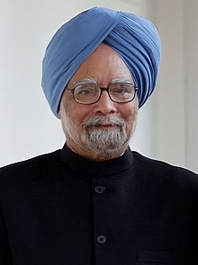
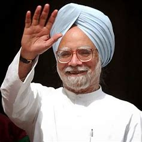
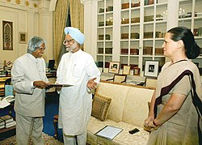
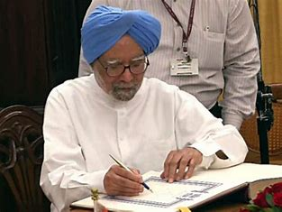

DR MANMOHAN SINGH JI
Dr. Manmohan Singh, India's 14th Prime Minister, is widely recognized as a knowledgeable scholar. He is highly respected for his hard work and academic approach to his duties, as well as for his approachability and humble demeanor.
EARLY LIFE
Dr. Manmohan Singh was born on 26 September 1932 in Gah, Punjab, British India to Gurmukh Singh and Amrit Kaur. He was raised by his paternal grandmother after his mother's early demise, and had a close bond with her. He started his schooling in the Urdu medium and continued to write his speeches in Hindi in the Urdu script, even during his tenure as Prime Minister. At times, he also used Gurmukhi script, which is used to write in Punjabi, his mother tongue.
EARLY CAREER

After obtaining his D.Phil., Singh returned to India and began his career as a senior lecturer of economics at Panjab University from 1957 to 1959. He then served as a reader in economics at the same university from 1959 to 1963, and was promoted to economics professor there from 1963 to 1965. In 1966, he left India to work for the United Nations Conference on Trade and Development (UNCTAD) where he served until 1969. Upon his return to India, he was appointed as an advisor to the Ministry of Foreign Trade by Lalit Narayan Mishra, who recognized Singh's talent as an economist. From 1969 to 1971, Singh was a professor of international trade at the Delhi School of Economics, University of Delhi.
In 1972, Singh became the chief economic adviser in the Ministry of Finance, and in 1976 he was appointed as the secretary in the Finance Ministry. From 1980 to 1982, he served at the Planning Commission, and in 1982, he was appointed as the governor of the Reserve Bank of India under the then finance minister, Pranab Mukherjee. He held this post until 1985 and went on to become the deputy chairman of the Planning Commission of India from 1985 to 1987. After his tenure at the Planning Commission, Singh served as the secretary-general of the South Commission, which is an independent economic policy think tank based in Geneva, Switzerland, from 1987 to November 1990.
Singh returned to India from Geneva in November 1990 and served as the advisor to the Prime Minister of India on economic affairs during the tenure of Chandra Shekar. In March 1991, he was appointed as the chairman of the University Grants Commission.
POLITICAL CAREER
In June 1991, P.V. Narasimha Rao, who was the Prime Minister of India at the time, appointed Singh as the Finance Minister. Singh recounted to British journalist Mark Tully in 2005 that Rao's Principal Secretary initially approached him to offer the position, but he did not take it seriously. However, when Rao himself contacted Singh the next morning and insisted that he come to the Rashtrapati Bhavan for the swearing-in ceremony, Singh realized that he was serious and decided to accept the offer. This is how he began his political career.
MINISTER OF FINANCE
In 1991, India faced significant economic challenges, including a fiscal deficit of almost 8.5% of the gross domestic product, a large balance of payments deficit, and a current account deficit of nearly 3.5% of India's GDP. At that time, India's foreign reserves were only about US$1 billion, which was sufficient to cover the cost of just two weeks' worth of imports. In contrast, India's foreign reserves today are valued at around US$600 billion.
LEADER OF OPPOSITION IN RAJYA SABHA
Singh won his first election to the upper house of the Indian Parliament, the Rajya Sabha, in 1991, representing the state of Assam. He was subsequently re-elected to the Rajya Sabha in 1995, 2001, 2007, and 2013. During the period of 1998 to 2004, when the Bharatiya Janata Party was in power, Singh served as the Leader of the Opposition in the Rajya Sabha. In 1999, Singh contested for a seat in the Lok Sabha, the lower house of the Indian Parliament, from South Delhi but was unsuccessful in winning the election.
PRIME MINISTER

After the 2004 general elections, the Indian National Congress became the political party with the highest number of seats in the Lok Sabha, ending the incumbent National Democratic Alliance (NDA) tenure. It formed a coalition with allies called the United Progressive Alliance (UPA) and staked a claim to form the government. To the surprise of many, Chairperson Sonia Gandhi nominated Manmohan Singh, a technocrat, as the UPA candidate for the Prime Ministership. Although Singh had never won a Lok Sabha seat, he enjoyed widespread popular support because he was seen as a clean politician who was untainted by the corruption that had plagued many previous Indian administrations. Singh was sworn in as the Prime Minister of India on 22 May 2004.
HONOURS, AWARDS AND INTERNATIONAL RECOGNITION
| India |
Padma Vibhushan |
1987 |
| Saudi Arabia |
Special Class of the Order of King Abdul-Aziz |
2010 |
| Japan |
Grand Cordon of the Order of the Paulownia Flowers |
2014 |
ACHIEVEMENTS AS A PRIME MINISTER AND FINANCE MINISTER

GDP CLOCKED TO 10.08%
According to data on GDP prepared by the Committee on Real Sector Statistics, constituted by the National Statistics Commission, India achieved a growth rate of 10.08% in 2006-2007 during Prime Minister Manmohan Singh’s government. This report has been released on the website of the Ministry of Statistics and Programme Implementation (MSPI). This was the highest recorded GDP in India since the liberalization of the economy in 1991. The highest GDP growth rate since independence was recorded at 10.2% in 1988-1989 under the Prime Ministership of Rajiv Gandhi. Manmohan Singh served two tenures as Prime Minister, completing 10 years in office, the longest term after the first Prime Minister Jawaharlal Nehru.
Gadkari stated that "the country is indebted to Manmohan Singh for the liberalization that gave a new direction to the economy."
* Dr. Manmohan Singh is considered one of the best Finance Ministers India has ever had, and is undoubtedly the top Finance Minister. His economic policies, collectively known as Manmohanomics, and his budget on 24th July 1991, have permanently changed the fate of the Indian economy. He put an end to the License Raj, which had previously benefited only a few influential business families through lobbying in powerful circles, and instead encouraged new entrepreneurs and businessmen.
* During the period of 1982-85, when Manmohan Singh was the Governor of Reserve Bank of India (RBI), he played a crucial role in maintaining the exchange rate of Indian Rupee in parity with the US Dollar.
* In 1991, Dr. Manmohan Singh was appointed as the Finance Minister under the government of P. V. Narasimha Rao, during a time when the Indian economy was facing a severe crisis, marked by macroeconomic imbalances, poor productivity, rising inflation rates, and other issues. Dr. Singh formulated a policy that proved to be highly successful in the following years. After the implementation of Dr. Singh's policy, India's foreign exchange reserves rose from less than 1 billion USD to 10 billion USD between June 1991 to June 1993.
* Dr. Manmohan Singh's experience showed that it was relatively easy to attract private investment into ports with attractive returns, no payment risks, and low market risks. Therefore, in 1994, he appointed an expert group to focus on the commercialization of infrastructure projects. This group projected economic growth to reach 7.5% by 2002 and 8.5% by 2006, over a 10-year period from 1996 to 2006
* Dr. Singh emphasized the need for public investment to maximize private sector involvement, recognizing the private sector's potential to become a major contributor to the expansion of infrastructure in the coming years. At the time, India's combined fiscal deficit (Centre and States) was nearly 8% of GDP, the highest among developing nations. When Dr. Singh became Prime Minister of India in 2004, his economic reforms since 1991 began to show positive results. From 2003, India's GDP grew over 8% per annum, reducing unemployment rates, poverty, and other economic challenges.
* Dr. Manmohan Singh played a crucial role in securing financial support from the IMF and the World Bank to balance the ongoing economic crisis in India. In addition, India also approached Japan for a bilateral currency agreement, which Japan rejected citing an unclear program of reform and adjustment by India.
* During the 1990s, India became a founding member of the World Trade Organization (WTO) and committed itself to multilateral rules of engagement in trade. India also began to enter into regional and bilateral trade agreements, supported the idea of a South Asian Free Trade Agreement, and expressed interest in an India-Asian Free Trade Agreement (FTA). Dr. Manmohan Singh's policies helped position India as a leader of the South Asian continent. However, India always faced challenges from China, which as an open economy and a major trading nation had a greater impact on India's political and economic policies.
* Dr Manmohan Singh's liberal economic policies brought about significant reform in Indian business. IT firms such as Tata Consultancy Services, Infosys, and WIPRO, as well as pharmaceutical firms like Ranbaxy and Dr. Reddy's, moved away from the earlier 'Bombay club' mentality towards a global orientation. His policies improved India's relations with other OECD (Organization for Economic Cooperation and Development) economies such as the UK, US, Germany, Austria, Italy, etc. Due to these reforms, India entered into a new league where its performance was compared with China and ASEAN (The Association of Southeast Asian Nations), instead of just South Asia and Pakistan. Additionally, India's GDP and foreign exchange reserves increased, with a sharp decline in external debt and debt service ratio.
* To boost the Indian economy, Dr. Manmohan Singh signed Free Trade Agreements and Comprehensive Economic Partnership Agreements with several countries such as Mauritius, ASEAN countries, etc. The signed agreements not only accelerated India's economic growth but also improved its external relations.
* Dr. Manmohan Singh also placed importance on civil nuclear energy, and in July 2015, a joint statement was released by the White House after a meeting, with the civil nuclear energy issue being one of the important initiatives to promote India's economic growth and technological development.
* Moreover, the policy reforms introduced by Dr. Manmohan Singh in 1991 aimed to change the "anti-agriculture" bias in India's trade policies. Under his guidance, the Tax Reform Committee recommended three rates of import duties: (a) essential agricultural commodities such as wheat and rice should be imported at 0% import duty, (b) commodities like oilseeds and pulses should be imported at a 10% import duty, and (c) non-agricultural goods such as almonds, cashews, and nuts should be imported at a 50% import duty.
* Prime Minister Dr. Manmohan Singh launched the Aadhaar Enabled Service Delivery in Dudu, Rajasthan, to celebrate the 2nd anniversary of Aadhaar.
* The government plans to implement Aadhaar Enabled Service Delivery in 51 districts across India. These services will be linked to various government schemes like MNREGA wage payments, PDS distribution, payment of social security benefits like old-age payments, and distribution of LPG cylinders, among others. Many state governments are already prepared to implement these initiatives. As of now, 23 crore residents have enrolled for an Aadhaar number, while 21 crore Aadhaar numbers have been issued.
INDO-US NUCLEAR DEAL
One of the most notable accomplishments of India during the tenure of Prime Minister Manmohan Singh was the signing of the Indo-US Nuclear Deal, also known as the India Civil Nuclear Agreement. The agreement was based on a joint statement made by Manmohan Singh and the then US President, George W. Bush, and was significant in that it required India to separate its military and civil nuclear facilities, and to place all of its civil nuclear facilities under the supervision of the International Atomic Energy Agency (IAEA). The agreement was signed on July 18th, 2005.
MOBILE NUMBER PORTABILITY (MNP) 2011
In 2011, Dr. Manmohan Singh, the Prime Minister of India, launched the Mobile Number Portability (MNP) service. He made a call to the then Union Minister of Communications and IT, Kapil Sibal, from a ported number, and congratulated the Telecom Sector for introducing MNP. He also applauded the sector for being the fastest growing telecom market in the world.